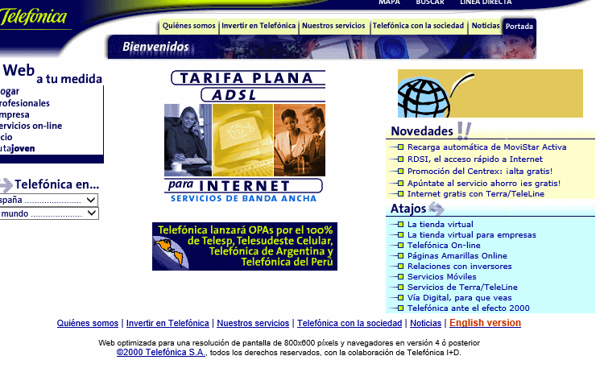

| Otras Décadas | Ilustracion | Informacion |
|---|---|---|
|  | Era un lenguaje que permitía trabajar por separado el contenido y el diseño, aportando una mayor libertad para poder diseñar la página web de un modo mucho más creativo. También se desarrolló la idea de aportar espacios blancos en las páginas, para ofrecer descanso ocular a los usuarios |